Nutrição da Cultura da Soja
Adubação no Cerrado do Tocantins: da correção do solo à recomendação na prática
Tópicos Integradores, prof. Guilherme Rocha dos Santos, Afya Porto Nacional
Vanessa Vargas, Lucas Gomes, Lídia Gonçalves, Fernanda Bruna, Gabriel Martelli, Thiago, Samuel Andrade, Kawan Barreira, Allison Ryam, Maycom Buratti, Eduardo Aires, Alan Pires, Marcello Batista
Foto: Jeff Weese, CC BY 2.0, Wikimedia Commons.
Roteiro
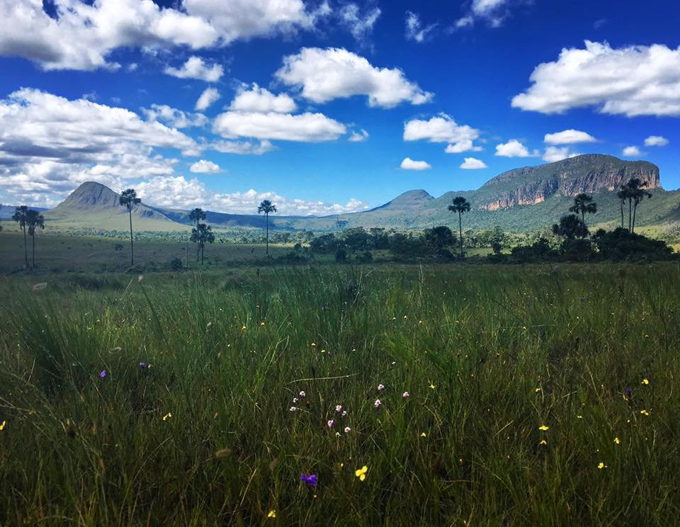
Importância e exigências
Por que a soja pesa tanto no Tocantins e quanto ela tira do solo a cada tonelada colhida.
Foto: Gil df, CC BY-SA 4.0, Wikimedia Commons.
O Brasil lidera a produção mundial
Fonte: USDA, 2026
Brasil: safra recorde em 2025/26
Produção de soja em 2025/26, a maior da série da Conab
Peso da soja em toda a produção de grãos do país
Parte do grão colhido que foi exportada em grão
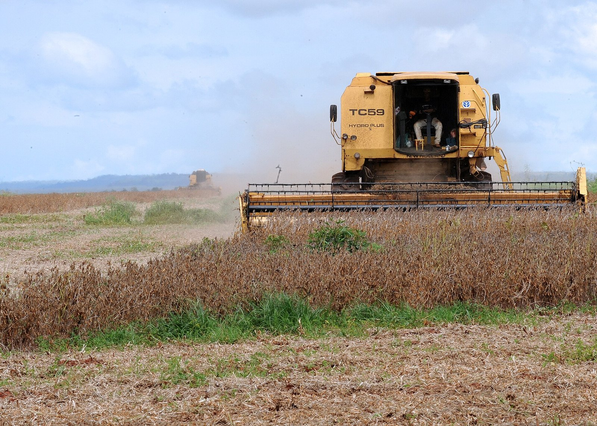
Foto: Roosevelt Pinheiro/ABr, CC BY 3.0 br, Wikimedia Commons.
Fonte: Conab, 2026a, 2026b (cálculos do grupo); Forbes Agro, 2026; Agência Gov, 2026
Tocantins: 8º produtor do país
Soja do TO em 2025/26: 1º produtor da Região Norte
De 2019/20 a 2025/26 (Brasil: +43%)
Único estado inteiro no MATOPIBA: 139 municípios
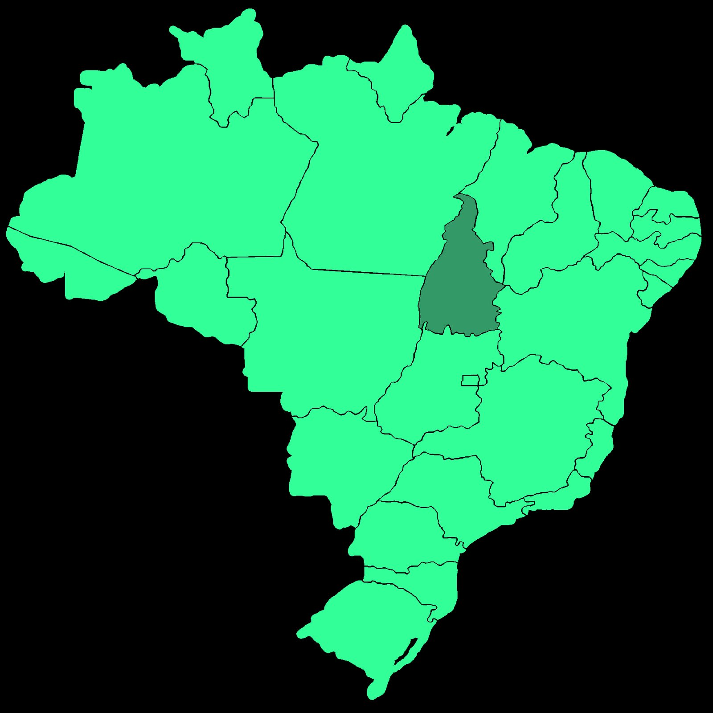
Foto: SantiagoFrancoRamos, CC BY-SA 4.0, Wikimedia Commons.
Fonte: Conab, 2026a, 2026b (cálculos do grupo); Miranda; Magalhães; Carvalho, 2014
Porto Nacional: 1º produtor do TO
Fonte: IBGE, 2026 (Produção Agrícola Municipal 2025); Oliveira et al., 2023
Extração × exportação por tonelada
Fonte: Oliveira et al., 2023; Oliveira Junior et al., 2014
Cada tonelada colhida leva…
Vêm da fixação biológica, não do adubo
71% de todo o P que a planta absorveu
O restante do K volta ao solo com a palha
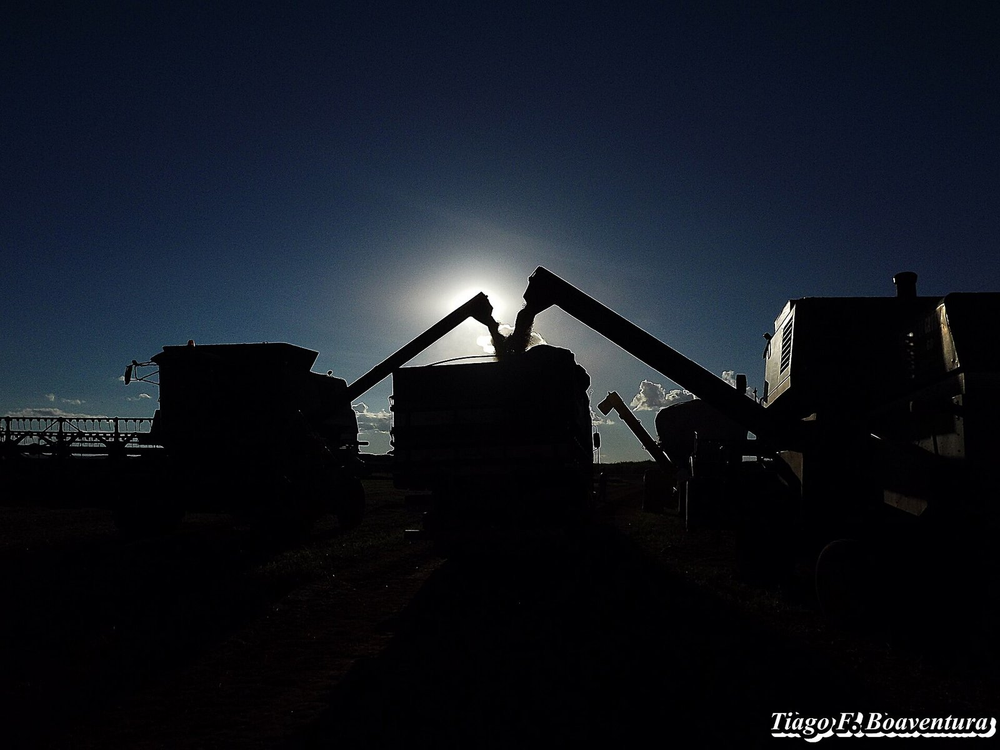
Foto: Tiago Firmino Boaven…, CC BY 3.0, Wikimedia Commons.
Fonte: Oliveira et al., 2023; Conab, 2026a, 2026b (cálculos do grupo)
O que mais limita no Cerrado
| Fator | Por que limita | O que fazer |
|---|---|---|
| Acidez e Al³⁺ | Al tóxico até 20–40 cm | Calcário (V2 50%) + gesso |
| Fósforo (P) | Óxidos de Fe e Al fixam o P | Corrigir e repor 15 kg P2O5/t |
| Potássio (K) | CTC baixa: lixiviação | Repor 20 kg K2O/t; parcelar |
| Enxofre (S) | Pouca MO; MAP e SFT sem S | 15 a 30 kg S/ha |
| Boro e zinco | Teor baixo; B piora na seca | Dose pela análise de solo |
| Manganês | Falta induzida por pH alto | Evitar supercalagem |
| Cobalto e Mo | Exigidos pela FBN | Co 2–3 g/ha; Mo 12–25 g/ha |
Fonte: Oliveira Junior et al., 2020; Oliveira et al., 2023
Marcha de absorção: quando a soja pede
Fonte: Oliveira Junior et al., 2014; Bender; Haegele; Below, 2015
O grão puxa nutrientes da folha
Absorvido depois do R4, no enchimento de grãos
Remobilizado das folhas para o grão
Absorvido antes do enchimento de grãos
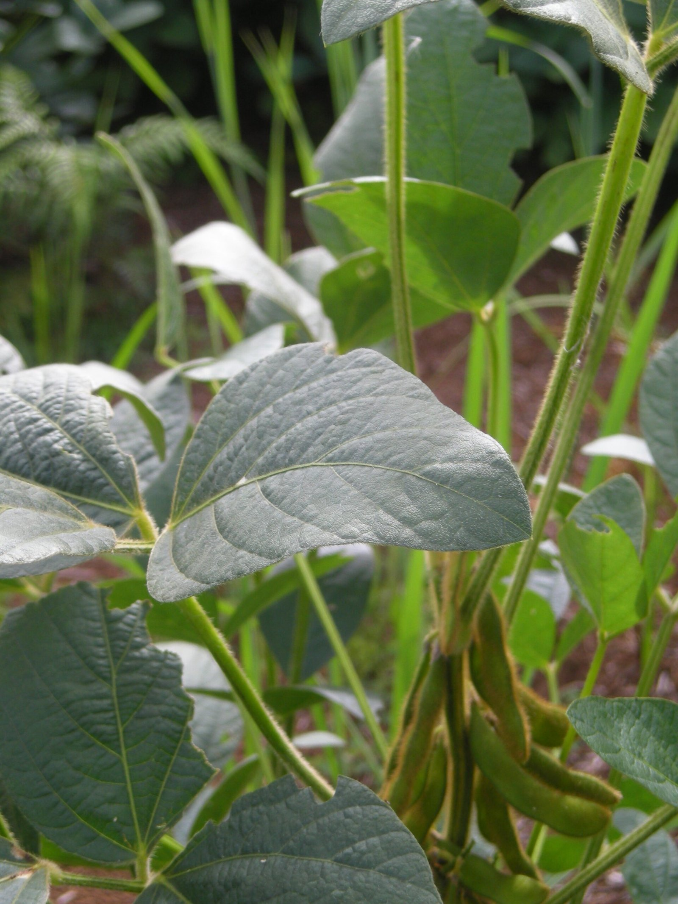
Foto: Harry Rose from South West Rocks, Australia, CC BY 2.0, Wikimedia Commons.
Fonte: Bender; Haegele; Below, 2015
Por que a soja não recebe adubo com N
- Para 255 kg de N/ha: 510 kg de N no adubo (50% de eficiência)
- Custo: US$ 462 por hectare
- Inibe os nódulos; sem ganho em mais de 300 ensaios
- Bradyrhizobium fornece o N que a soja exige
- Custo do inoculante: US$ 0,86 por hectare
- Brasil: cerca de US$ 28 bilhões poupados na última safra
Fonte: Hungria; Nogueira, 2022; Agência Gov, 2026
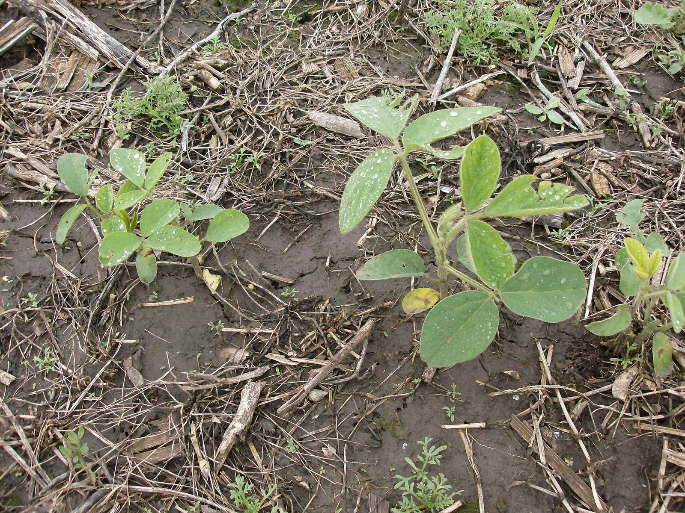
Adubação de implantação
Corrigir o solo, tratar a semente e adubar no plantio: a base que sustenta a lavoura inteira.
Foto: Maggilautaro, Public domain, Wikimedia Commons.
Calagem: exemplo por saturação por bases
Fonte: Oliveira Junior et al., 2020; Oliveira et al., 2023 (valores do laudo hipotéticos)
Calcário no plantio direto
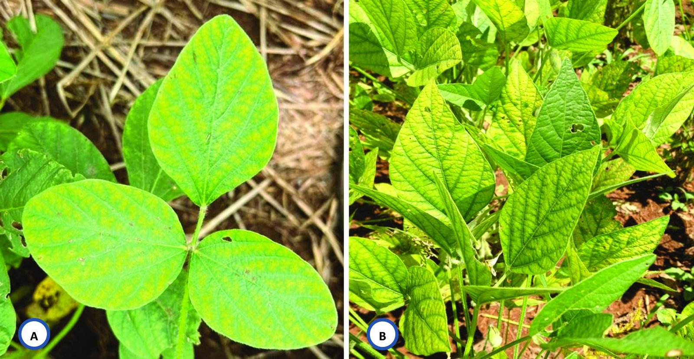
Folhas com deficiência de Mn (Japira-PR e Alto Taquari-MT). Fonte: Embrapa Soja, Documentos 458 (Oliveira et al., 2023, p. 60).
- Antes do plantio direto: calcário incorporado em 0–20 cm, 3 meses antes de semear
- No plantio direto: superficial se pH < 5,5, V 10 pontos abaixo ou m > 20%
- O calcário reage em ~3 anos; repetir sem precisar causa falta de Mn
Fonte: Oliveira et al., 2023; Oliveira, 2024
Gesso: o corretivo do subsolo
Ou Ca < 0,5 cmolc/dm³: o gesso é indicado
Dose em kg/ha: com 45% de argila, 2.250 kg/ha
Duração do efeito do gesso no subsolo
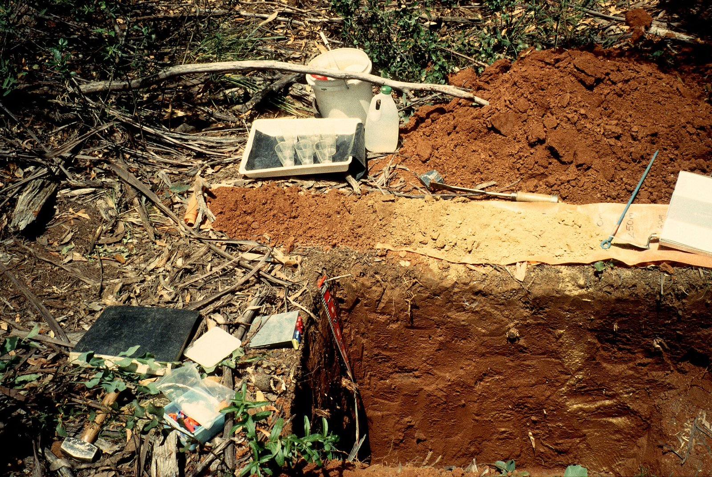
Foto: P. Ryan, CSIRO, CC BY 3.0, Wikimedia Commons.
Fonte: Oliveira Junior et al., 2020; Sousa; Lobato; Rein, 1995
Tratamento de sementes: doses
| Produto | Dose | Atenção |
|---|---|---|
| Bradyrhizobium (semente) | ≥ 1,2 milhão células/semente | Semear em até 24 h |
| Bradyrhizobium (sulco) | ≥ 2,5 milhões células/semente | Calda ≥ 50 L/ha |
| Área nova ou arenosa | Dobro da dose | Reinocular: +8% ao ano |
| Azospirillum | 1 dose/ha (~120 mil cél./sem.) | Não aumentar a dose |
| Cobalto (Co) | 2 a 3 g/ha | Pode amarelar a plântula |
| Molibdênio (Mo) | 12 a 25 g/ha | Preferir foliar em V3–V5 |
Ordem: fungicida e inseticida → secar → inoculante por último (nunca no “sopão”).
Fonte: Hungria; Nogueira, 2020, 2022; Prando et al., 2024
Coinoculação: o ganho depende da base
Fonte: Prando et al., 2024; Hungria; Nogueira, 2022
Cobalto e molibdênio: poucos gramas
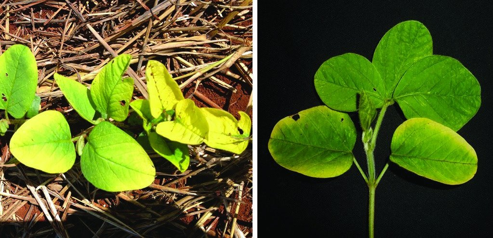
Plântulas com falta de Fe causada pelo cobalto. Fonte: Embrapa Soja, Documentos 458 (Oliveira et al., 2023, p. 65).
- Co 2–3 g/ha e Mo 12–25 g/ha toda safra: a análise de rotina não mede
- Preferir foliar em V3–V5, longe da bactéria da semente
- Co na semente pode amarelar a plântula em V1 (falta de Fe), que se recupera em V2
Fonte: Oliveira et al., 2023; Prando et al., 2024; Brasil, 2024
Fósforo e potássio na semeadura
Manutenção de P com teor adequado (10 kg/t se alto)
Manutenção de K por tonelada de grão esperada
Teto de N que pode vir junto, no MAP
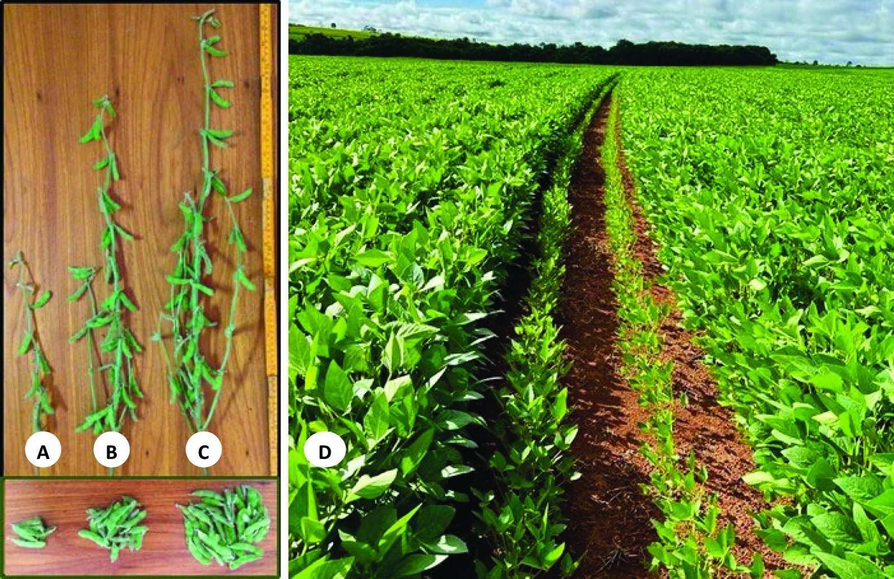
Plantas com P baixo (A), médio (B) e adequado (C). Fonte: Embrapa Soja, Documentos 458 (Oliveira et al., 2023, p. 50).
Fonte: Oliveira et al., 2023; Oliveira Junior et al., 2020
Enxofre e micronutrientes no Cerrado
| Nutriente | Teor baixo | Dose | Teor médio | Dose |
|---|---|---|---|---|
| S (0–40 cm) | ≤ 4 | 20–30 kg/ha | 5 a 9 | 15 kg/ha |
| B (água quente) | < 0,30 | 2,0 kg/ha | 0,30–0,50 | 0,5 kg/ha |
| Cu | < 0,5 | 2,0 kg/ha | 0,5–0,8 | 0,5 kg/ha |
| Mn | < 2,0 | 6,0 kg/ha | 2,0–5,0 | 1,5 kg/ha |
| Zn | < 1,1 | 6,0 kg/ha | 1,1–1,6 | 1,5 kg/ha |
Teores em mg/dm³; Cu, Mn e Zn por Mehlich-1. S: 20 kg/ha até 3 t/ha e 30 kg/ha de 3 a 5 t/ha.
Fonte: Oliveira Junior et al., 2020; Oliveira et al., 2023
Principais fontes e seus teores
| Fonte | Garantia mínima | Uso na soja |
|---|---|---|
| MAP | 9% N; 48% P2O5 | P no sulco; N ≤ 20 kg/ha |
| Superfosfato simples | 18% P2O5; 16% Ca; 10% S | P + S + Ca |
| Superfosfato triplo | 41% P2O5; 10% Ca | P concentrado, sem S |
| Cloreto de potássio | 50% K2O (comercial ~60%) | Mais barato; muito salino |
| Gesso agrícola | 16% Ca; 13% S | S e Ca no subsolo |
| Ácido bórico | 17% B | B na calda ou foliar |
| Sulfato de zinco | 20% Zn; 9% S | Zn via solo |
Fonte: Brasil, 2024; Borges; Silva, 2002; Oliveira Junior et al., 2020
Sulco ou lanço?
- P é pouco móvel e chega à raiz por difusão: vai perto da raiz
- Adubo ao lado e abaixo da semente, que fica a 3–5 cm
- K2O no sulco: até 40 a 60 kg/ha, conforme a região
- P alto e pouco risco de seca: lanço rende como o sulco
- K: lanço ou parcelar acima de 40 kg/ha (CTC < 4) ou de 100 kg/ha
- Adubação de sistema: K para a soja e o milho safrinha
Fonte: Oliveira Junior et al., 2020; Balbinot Junior et al., 2020; Borges; Silva, 2002
Interpretar P e K no laudo
| Classe | P (16–35% arg.) | P (36–60% arg.) | K (CTC < 4) | K (CTC ≥ 4) |
|---|---|---|---|---|
| Muito baixo | 0–5,0 | 0–3,0 | — | — |
| Baixo | 5,1–10,0 | 3,1–5,0 | < 16 | ≤ 25 |
| Médio | 10,1–15,0 | 5,1–8,0 | 16–30 | 26–50 |
| Adequado | 15,1–20,0 | 8,1–12,0 | 31–40 | 51–80 |
| Alto | 20,1–35,0 | 12,1–18,0 | > 40 | > 80 |
| Muito alto | > 35,0 | > 18,0 | — | — |
Em mg/dm³, camada 0–20 cm; P por Mehlich-1 (pela argila), K pela CTC a pH 7.
Fonte: Oliveira Junior et al., 2020; Oliveira et al., 2023
Exemplo: dose pela meta de produtividade
Fonte: Oliveira et al., 2023; Oliveira Junior et al., 2020; Conab, 2026b (exemplo do grupo)
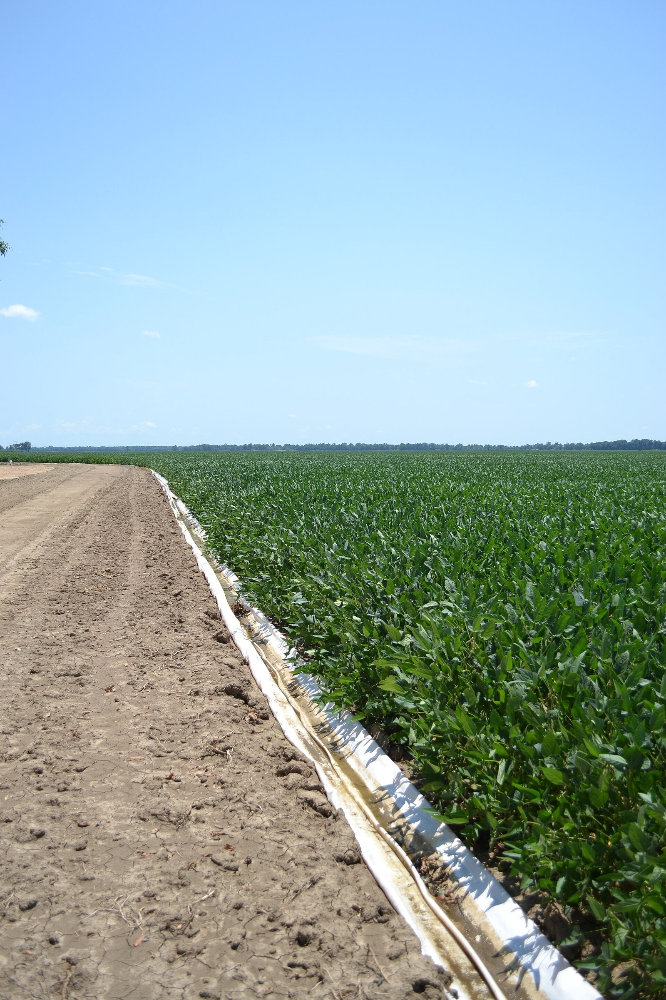
Cobertura e via foliar
Depois da semeadura, o que ainda vale a pena aplicar, e até quando.
Foto: United Soybean Board, CC BY 2.0, Wikimedia Commons.
Nitrogênio em cobertura: não
N mineral reduz a nodulação e não sobe a produtividade
responderam a N em R1 ou R5 em Latossolo do Cerrado
teto de N que pode ir de carona no sulco (MAP)
do N exigido por 3,5 t/ha: o que esses 20 kg entregam
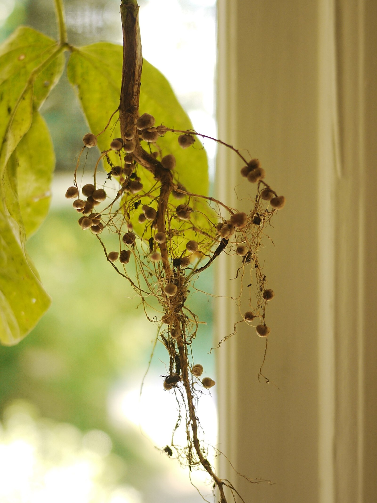
Foto: Isarnan, Public domain, Wikimedia Commons.
Fonte: Hungria e Nogueira (2020); Mendes et al. (2007); Pierozan Junior et al. (2023)
Potássio em cobertura: quando faz sentido
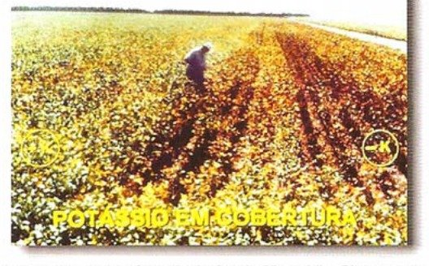
Fonte: Embrapa Soja, Documentos 231, p. 18. Sul do MA, solo arenoso: secas sem K em cobertura; verdes com K.
- Dose acima de 100 kg/ha de K₂O, ou acima de 40 com CTC < 4: parcelar ou lanço
- No sulco, até 60 kg/ha de K₂O, por causa do efeito salino do KCl
- Até V4/V5 a lanço; doses > 60 kg: metade no plantio, metade aos 30 dias
Fonte: Oliveira et al. (2024); Sousa e Lobato (2004); Alves et al. (2025)
Épocas: tudo via solo termina antes de R1
Fonte: Oliveira Junior et al. (2014); Oliveira et al. (2024); Hungria e Nogueira (2020)
Via foliar: o que é oficial e o que é debate
| Nutriente | Época | Dose | Situação |
|---|---|---|---|
| Co e Mo | V3–V5 (ou semente) | 2–3 g Co e 12–25 g Mo/ha | Oficial |
| B | Com o glifosato (dessecação ou pós) | até 400 g/ha de B no pós | Oficial; responde em solo arenoso |
| Mn | R1 ou R3, se houver sintoma | 235 g/ha no ensaio; tóxico a 600 | Depende do diagnóstico |
| Ca + B | R1–R4 | 3 L/ha de produto comercial | Controverso |
| Ni | V3/V4 | 20 g/ha | Experimental |
| N | Nenhum estádio | 0 | Não fazer |
Mn junto com glifosato: o sulfato de Mn reduz o efeito do herbicida; o Mn-EDTA não (Bernards et al., 2005).
Fonte: Oliveira Junior et al. (2020); Carvalho et al. (2012); Seidel e Basso (2012); Rodak et al. (2024)
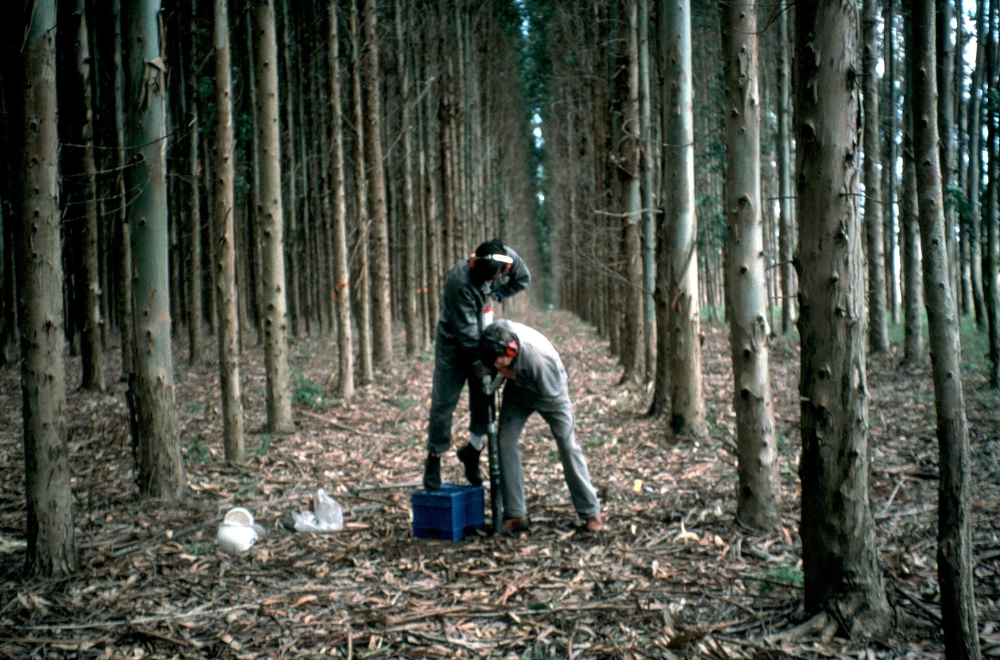
Recomendação na prática
Um laudo real, da área experimental da Afya em Porto Nacional, resolvido conta por conta.
Foto: T.Grove, CSIRO, CC BY 3.0, Wikimedia Commons.
Laudo real: área experimental da Afya
| Atributo | 0–20 cm | 20–40 cm |
|---|---|---|
| pH (CaCl₂) | 4,77 | 4,49 |
| Ca / Mg (cmolc/dm³) | 1,7 / 1,6 | 0,8 / 1,6 |
| K (mg/dm³) | 40,6 | 42,5 |
| Al / H+Al (cmolc/dm³) | 0,14 / 3,96 | 0,24 / 2,14 |
| P Mehlich-1 (mg/dm³) | 2,2 | 0,4 |
| S-SO₄ (mg/dm³) | 1,5 | 9,16 |
| Argila (g/kg) | 490 | 450 |
Micros (0–20 cm, mg/dm³): B 1,4; Cu 1,1; Fe 13,0; Mn 3,6; Zn 0,2. Meta: 4,2 t/ha (70 sc/ha), sequeiro.
Fonte: HEMA Engenharia (2026); Conab (2026b)
Interpretação: o gargalo é o fósforo
Muito baixo para 36–60% de argila (0 a 3,0)
Relação baixa (< 2,0); Ca de 1,7 também baixo
Médio com CTC ≥ 4 (faixa de 26 a 50)
Baixo (< 1,1), como no MATOPIBA
Fonte: Oliveira Junior et al. (2020); Souza et al. (2023)
Calagem passo a passo: 0,40 t/ha
Fonte: Oliveira Junior et al. (2020); Sousa e Lobato (2004)
Calcário calcítico, e gesso não
- Ca baixo (1,7) e Ca/Mg de 1,06: subir o cálcio
- Mg já é médio (1,6)
- No fim das chuvas (abr–mai), 3 meses antes
- Critério é a camada de 20–40 cm
- Ca = 0,8 (≥ 0,5) e m = 8,1% (≤ 20%)
- O S virá do superfosfato simples
Fonte: Sousa e Lobato (2004)
Fósforo e potássio: as contas
Fonte: Oliveira Junior et al. (2020)
Enxofre, micros e inoculação
| Item | Laudo | Decisão e dose |
|---|---|---|
| S | 5,3 em 0–40 cm (médio) | 15 kg/ha; o SSP já traz ≈ 100–120 kg |
| Zn | 0,2 (baixo) | 6 kg/ha a lanço, ou 2 kg/ano no sulco × 3 safras |
| Mn | 3,6 (médio) | 1,5 kg/ha a lanço |
| B e Cu | 1,4 e 1,1 (altos) | Não aplicar |
| Co e Mo | Não analisados | 2–3 g Co + 12–25 g Mo/ha, foliar em V3–V5 |
| Inoculação | FBN | ≥ 1,2 milhão de células/semente; dobro no 1º cultivo |
| N mineral | — | Não usar; no sulco, até 20 kg/ha de N |
Classes e doses de micronutrientes: tabelas 28 e 30 da Embrapa Soja (Sistemas de Produção 17).
Fonte: Oliveira Junior et al. (2020); Hungria e Nogueira (2020)
Produtos por hectare
| Produto | Conta | kg/ha | Como |
|---|---|---|---|
| Calcário calcítico (PRNT 70%) | 0,28 ÷ 0,70 | 400 | A lanço, abr–mai |
| Superfosfato simples (18% P₂O₅) | 180 ÷ 0,18 | 1.000 | A lanço, incorporado |
| Formulado 04-30-10 | 63 ÷ 0,30 | 210 | Sulco: 8,4 kg N e 21 kg K₂O |
| KCl (58% K₂O) | (134 − 21) ÷ 0,58 | 195 | A lanço, antes da semeadura |
| Sulfato de zinco (23% Zn) | 6 ÷ 0,23 | 26 | A lanço |
| Sulfato manganoso (26% Mn) | 1,5 ÷ 0,26 | 6 | A lanço |
| Cloreto de Co + molibdato de Na | 3 g Co; 25 g Mo | 0,012 + 0,064 | Foliar, V3–V5 |
Limites do sulco conferidos: N 8,4 kg (≤ 20); K₂O 21 kg (≤ 60); P₂O₅ 63 kg (< 100).
Fonte: Sousa e Lobato (2004)
Calendário em Porto Nacional
Fonte: Sousa e Lobato (2004); Brasil (2023)
Custo no ano 1: 27,6 × 11,6 sc/ha
Fonte: FAESP (2026); Agrolink (2026)
No laudo da Afya, o fósforo é o gargalo: pouco calcário, calcítico, e o investimento vai para o P.
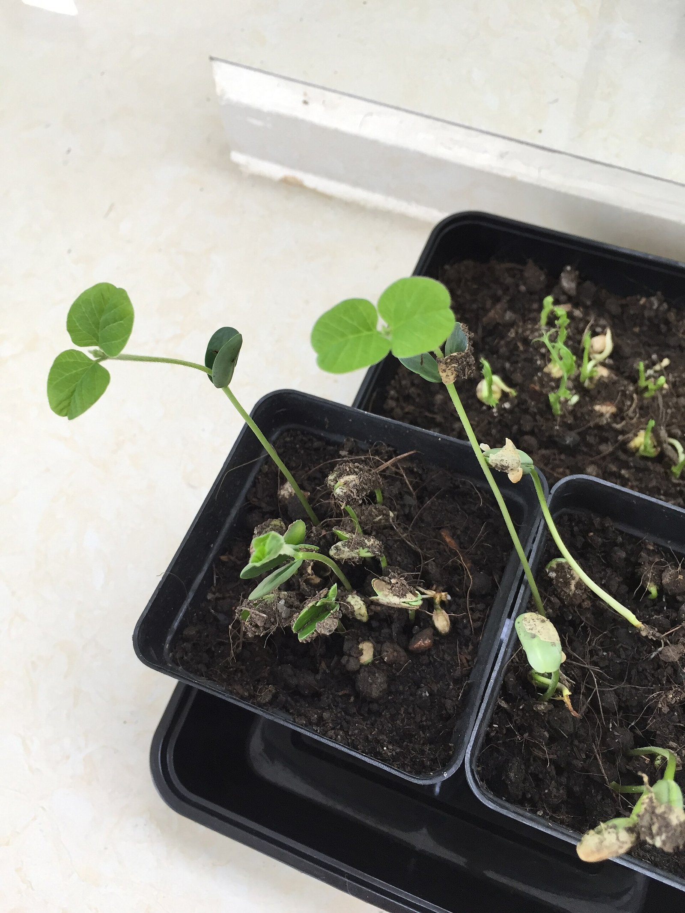
Deficiências e diagnose
Como reconhecer a falta de cada nutriente na lavoura e confirmar na análise de folha.
Foto: Zenyrgarden, CC BY-SA 4.0, Wikimedia Commons.
Chave visual: folhas velhas × novas
Começa nas folhas velhas
nutrientes móveis no floema- NAmarelo uniforme na folha toda; poucos nódulos
- PPlanta pequena e poucas vagens; quase sem mudar a cor
- KBordas e ápice amarelos que viram necrose
- MgAmarelo entre as nervuras, nervuras verdes
- Mo/CoIgual ao N: falham na fixação biológica
Começa nas folhas novas
nutrientes pouco móveis- SAmarelo uniforme, folha pálida
- CaGema apical morta, folha em forma de taça
- BGema morta, superbrotamento, aborto de flores
- MnEntre nervuras, amarelo-esverdeado
- ZnEntre nervuras, amarelo-ouro; folha estreita
- CuVerde-azulada, enrolada, aspecto de murcha
Fonte: Sfredo e Borkert (2004); Oliveira et al. (2023)
Potássio: da borda à necrose
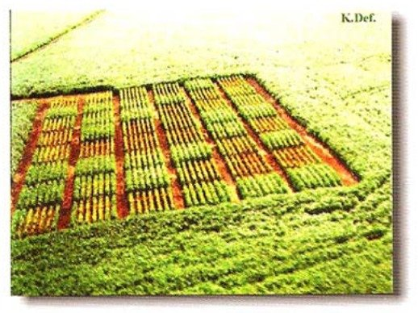
Fonte: Embrapa Soja, Documentos 231, p. 19.
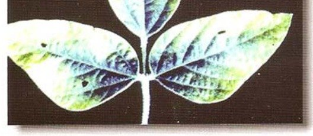
Fonte: Embrapa Soja, Documentos 231, p. 21.
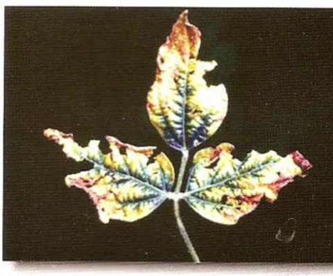
Fonte: Embrapa Soja, Documentos 231, p. 22.
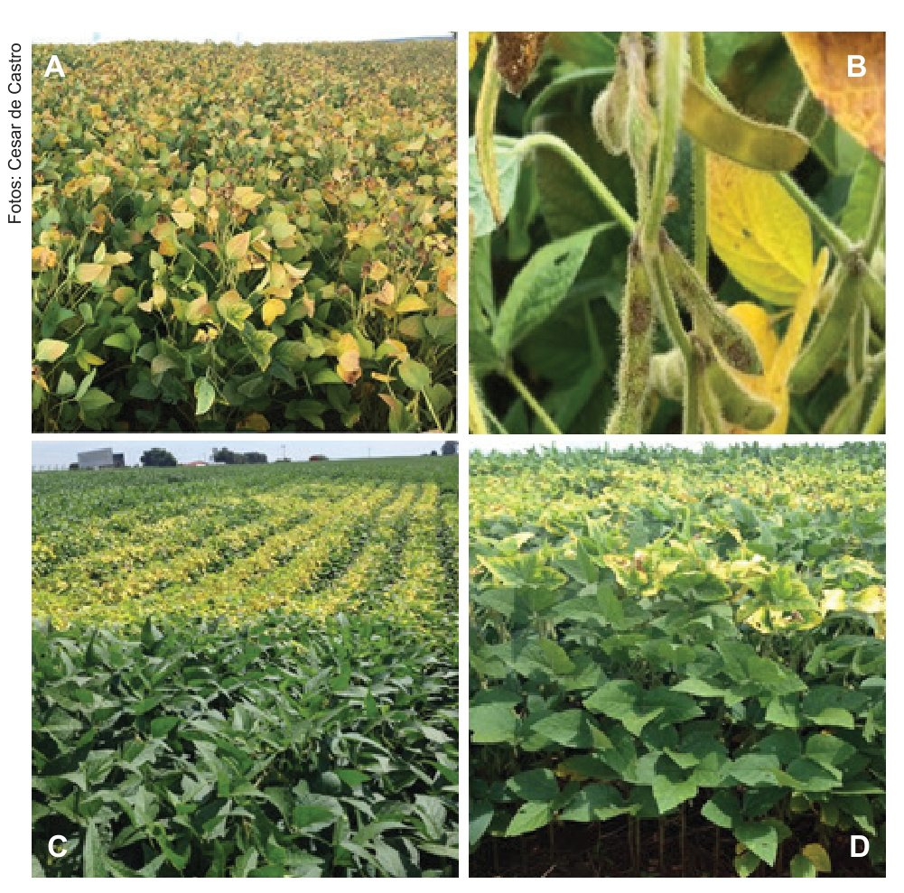
Fonte: Embrapa Soja, Documentos 458, p. 51.
Fonte: Oliveira Junior, Castro e Oliveira (2018)
Fósforo e enxofre: sinais discretos
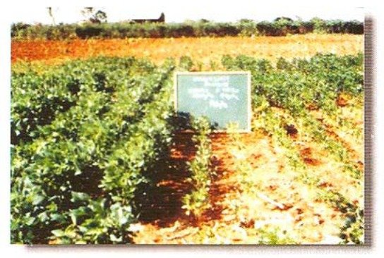
- Planta menor e menos vagens
- Quase não muda a cor da folha
- P de 11 → 3 mg/dm³: de 56 para 10 vagens
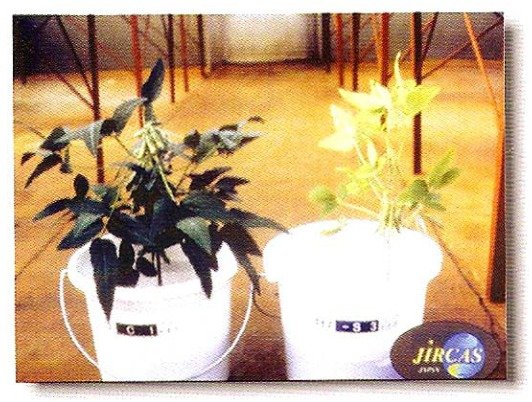
- Amarelo uniforme nas folhas novas
- Parece falta de N, mas em cima
- Mais comum como fome oculta
Fonte: Sfredo e Borkert (2004), fotos 5 e 20 (p. 16 e 28); Oliveira et al. (2023)
Parece deficiência, mas não é
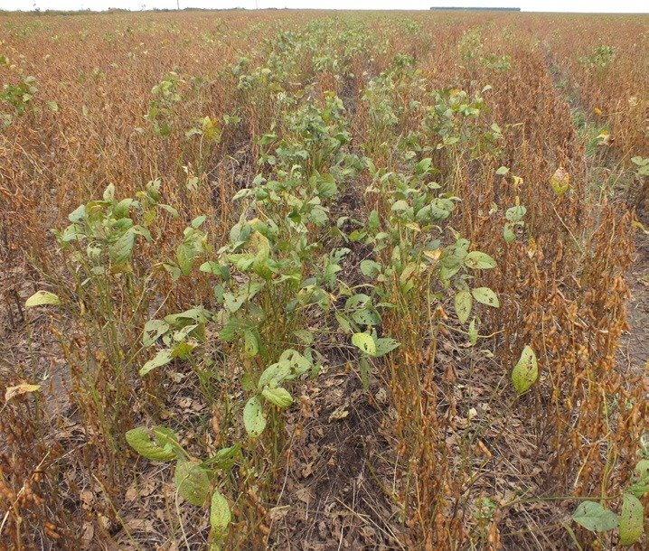
Fonte: Embrapa Soja, Circular Técnica 147, p. 8.
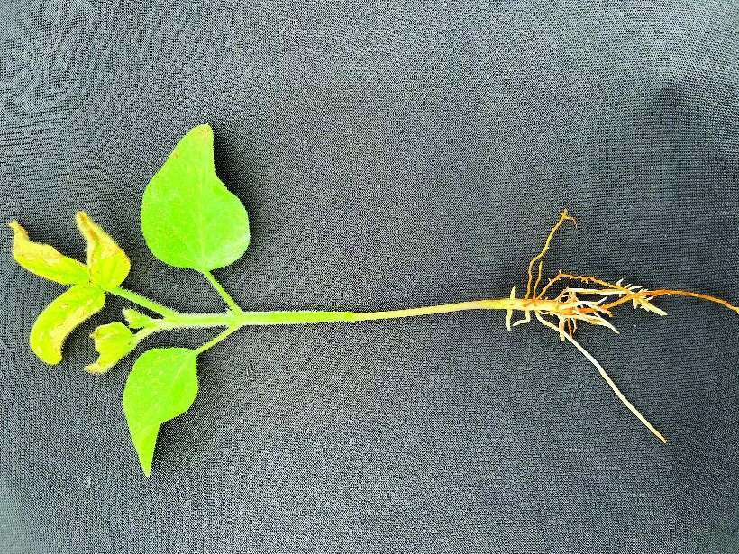
Fonte: Embrapa Soja, Documentos 458, p. 43.
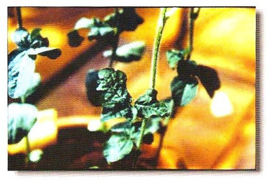
Fonte: Embrapa Soja, Documentos 231, p. 36.
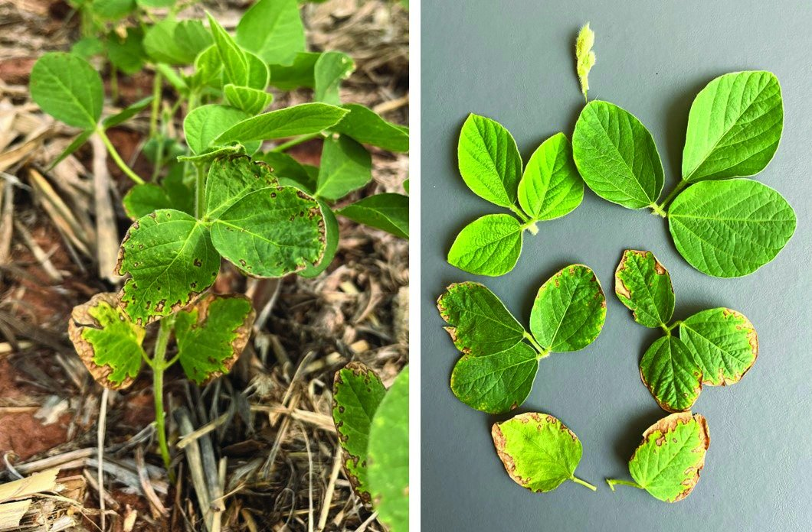
Fonte: Embrapa Soja, Documentos 458, p. 64.
Fonte: Favoreto e Meyer (2019); Rosolem et al. (2010)
Micronutrientes mais comuns no Cerrado
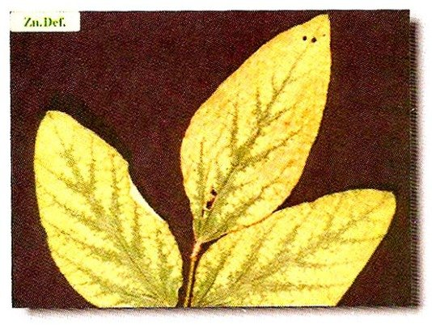
Fonte: Embrapa Soja, Documentos 231, p. 38.
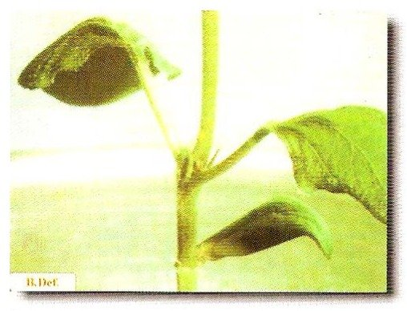
Fonte: Embrapa Soja, Documentos 231, p. 40.
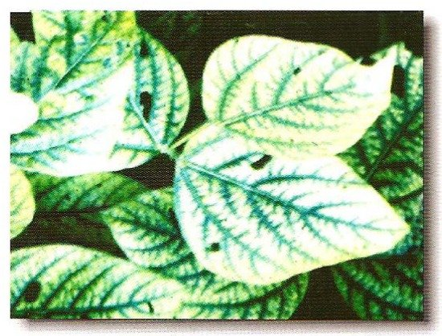
Fonte: Embrapa Soja, Documentos 231, p. 35.
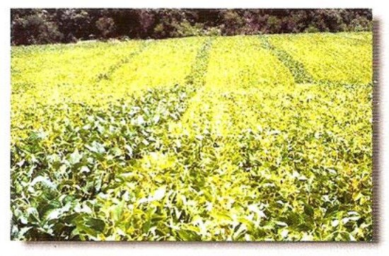
Fonte: Embrapa Soja, Documentos 231, p. 14.
Fonte: Resende (2004); Sfredo e Borkert (2004)
Diagnose foliar: a folha certa
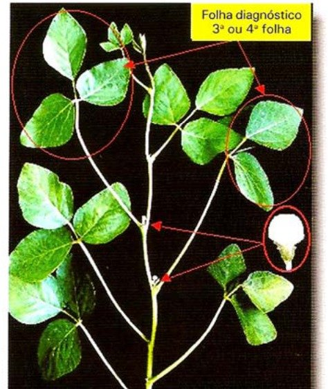
Fonte: Embrapa Soja, Documentos 231, p. 12.
- 3º ou 4º trifólio a partir do ápice, sem pecíolo, de pelo menos 25 plantas
- Crescimento determinado: R1–R2. Indeterminado: R2 até início de R3
- Saco de papel, sem poeira nem resíduo de pulverização
Fonte: Oliveira Junior et al. (2020)
Faixas de suficiência na folha
| Elemento | Baixo | Suficiente | Alto | MS/MT (R2) |
|---|---|---|---|---|
| N (g/kg) | < 45,0 | 45,0–65,0 | > 65,0 | 50,6–62,4 |
| P (g/kg) | < 2,8 | 2,8–4,5 | > 4,5 | 2,8–3,9 |
| K (g/kg) | < 18,0 | 18,0–25,0 | > 25,0 | 14,4–20,3 |
| S (g/kg) | < 2,4 | 2,4–4,0 | > 4,0 | 2,4–3,3 |
| B (mg/kg) | < 40 | 40–60 | > 60 | 37–56 |
| Mn (mg/kg) | < 70 | 70–150 | > 150 | 38–97 |
| Zn (mg/kg) | < 30 | 30–45 | > 45 | 41–78 |
Folha sem pecíolo. Tabela geral da Embrapa e faixa adequada de MS/MT (Kurihara et al., 2008, citado por Oliveira et al., 2023). Não há faixa oficial para Mo, Co e Ni.
Fonte: Oliveira et al. (2023); Souza et al. (2023)
Fome oculta: a perda vem antes
Folha sem sintoma, abaixo do nível crítico de 11 g/kg
Com P de 3 mg/dm³ no solo; eram 56 com 11 mg/dm³
Lavouras de baixa produtividade do MATOPIBA (CND)
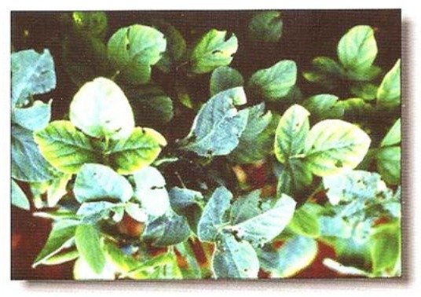
Fonte: Embrapa Soja, Documentos 231, p. 21.
Fonte: Oliveira Junior, Castro e Oliveira (2018); Oliveira et al. (2023); Souza et al. (2023)
Laudo antes, folha depois: na soja do Cerrado, adubar é decisão de análise, não de receita.
AGÊNCIA GOV. No Brasil, bioinsumos movimentam R$ 7 bi anuais e retiram 280 milhões de toneladas de CO2 do ar. Brasília, DF: EBC, 19 ago. 2026. Disponível em: https://agenciagov.ebc.com.br/noticias/202608/no-brasil-bioinsumos-movimentam-r-7-bi-anuais-e-retiram-280-milhoes-de-toneladas-de-co2-do-ar. Acesso em: 21 nov. 2026.
ALVES, G. M. V.; FARIA, L. H. J. de; BORNAL, D. R.; SOUSA, R. B.; CASTRO, G. F. de. Estratégias de adubação para aumentar a produtividade da soja: fontes de fósforo e época de aplicação de potássio. In: CONGRESSO BRASILEIRO DE SOJA, 10., 2025, Campinas. Resumos [...]. Londrina: Embrapa Soja, 2025. p. 241. (Embrapa Soja. Eventos técnicos & científicos, 6). Disponível em: https://www.infoteca.cnptia.embrapa.br/infoteca/bitstream/doc/1177356/1/ETC-6-CBSoja-2025-resumos.pdf. Acesso em: 21 nov. 2026.
BALBINOT JUNIOR, A. A.; DEBIASI, H.; FRANCHINI, J. C.; CONTE, O. Instalação da lavoura. In: SEIXAS, C. D. S.; NEUMAIER, N.; BALBINOT JUNIOR, A. A.; KRZYZANOWSKI, F. C.; LEITE, R. M. V. B. de C. (ed.). Tecnologias de produção de soja. Londrina: Embrapa Soja, 2020. p. 81-92. (Sistemas de Produção, 17). Disponível em: https://www.infoteca.cnptia.embrapa.br/infoteca/bitstream/doc/1123928/1/SP-17-2020-online-1.pdf. Acesso em: 21 nov. 2026.
BENDER, R. R.; HAEGELE, J. W.; BELOW, F. E. Nutrient uptake, partitioning, and remobilization in modern soybean varieties. Agronomy Journal, Madison, v. 107, n. 2, p. 563-573, 2015. DOI: 10.2134/agronj14.0435. Disponível em: https://cropphysiology.web.illinois.edu/wp-content/uploads/2022/08/BenderHaegele2015Soynutrient.pdf. Acesso em: 21 nov. 2026.
BERNARDS, M. L.; THELEN, K. D.; PENNER, D.; MUTHUKUMARAN, R. B.; McCRACKEN, J. L. Glyphosate interaction with manganese in tank mixtures and its effect on glyphosate absorption and translocation. Weed Science, v. 53, n. 6, p. 787-794, 2005. Disponível em: https://www.cambridge.org/core/journals/weed-science/article/glyphosate-interaction-with-manganese-in-tank-mixtures-and-its-effect-on-glyphosate-absorption-and-translocation/196616184522587C4AF6CC70C9499055. Acesso em: 21 nov. 2026.
BORGES, A. L.; SILVA, D. J. Fertilizantes para fertirrigação. In: BORGES, A. L.; COELHO, E. F.; TRINDADE, A. V. (org.). Fertirrigação em fruteiras tropicais. Cruz das Almas: Embrapa Mandioca e Fruticultura, 2002. cap. 2. Disponível em: https://www.infoteca.cnptia.embrapa.br/infoteca/bitstream/doc/151539/1/Fertilizantesparafertirrigacao.pdf. Acesso em: 21 nov. 2026.
BRASIL. Ministério da Agricultura, Pecuária e Abastecimento. Instrução Normativa nº 39, de 8 de agosto de 2018. Anexo I: especificações dos fertilizantes minerais simples (atualização em 21/11/2024). Brasília, DF: MAPA, 2024. Disponível em: https://www.gov.br/agricultura/pt-br/assuntos/insumos-agropecuarios/insumos-agricolas/fertilizantes/legislacao/anexo-i-in-39-2018-altera-sulfato-de-magnesio-21-11-24.pdf. Acesso em: 21 nov. 2026.
BRASIL. Ministério da Agricultura, Pecuária e Abastecimento. Secretaria de Política Agrícola. Portaria SPA/MAPA nº 83, de 24 de abril de 2023. Aprova o Zoneamento Agrícola de Risco Climático – ZARC para a cultura da soja no estado do Tocantins, ano-safra 2023/2024. Diário Oficial da União: seção 1, Brasília, DF, 26 abr. 2023. Disponível em: https://www.gov.br/agricultura/pt-br/assuntos/riscos-seguro/programa-nacional-de-zoneamento-agricola-de-risco-climatico/portarias/safra-vigente/tocantins/PORTN83SOJATO.retif.pdf. Acesso em: 21 nov. 2026.
CARVALHO, E. R.; OLIVEIRA, J. A.; FERREIRA, V. de F.; COSTA NETO, J.; REIS, L. V.; ANDRADE, V.; PASSOS, A. M. A. dos. Adubação foliar com manganês na produção e qualidade fisiológica de sementes de soja convencionais e transgênicas RR. In: CONGRESSO BRASILEIRO DE SOJA, 6., 2012, Cuiabá. Soja: integração nacional e desenvolvimento sustentável: anais. Brasília, DF: Embrapa; Londrina: Embrapa Soja, 2012. Disponível em: https://www.alice.cnptia.embrapa.br/alice/bitstream/doc/1185649/1/cpafro-19541.pdf. Acesso em: 21 nov. 2026.
COMPANHIA NACIONAL DE ABASTECIMENTO (CONAB). Acompanhamento da safra brasileira de grãos: v. 14, safra 2026/27, n. 2, segundo levantamento, novembro 2026. Brasília, DF: Conab, 2026a. Disponível em: https://www.gov.br/conab/pt-br/atuacao/informacoes-agropecuarias/safras/safra-de-graos/boletim-da-safra-de-graos/2o-levantamento-safra-2026-27/e-book_boletim-de-safras-2o-levantamento_2026.pdf. Acesso em: 21 nov. 2026.
COMPANHIA NACIONAL DE ABASTECIMENTO (CONAB). Soja – Brasil: série histórica de área plantada, produtividade e produção, safras 1976/77 a 2026/27. Brasília, DF: Conab, 2026b. Planilha eletrônica (SojaSerieHist.xls), estimativa em novembro de 2026. Disponível em: https://www.gov.br/conab/pt-br/atuacao/informacoes-agropecuarias/safras/series-historicas/graos/soja. Acesso em: 21 nov. 2026.
FAESP – FEDERAÇÃO DA AGRICULTURA E PECUÁRIA DO ESTADO DE SÃO PAULO. Relatório de acompanhamento mensal dos preços de insumos: edição nº 56, out. 2026 (referência dos dados: set. 2026). São Paulo: FAESP/SENAR, 2026. Dados: CNA/ESALQ-USP (Campo Futuro). Disponível em: https://faespsenar.com.br/wp-content/uploads/2026/11/2026.10-Precos-de-insumos-pagos-pelo-produtor-paulista_compressed.pdf. Acesso em: 21 nov. 2026.
FAVORETO, L.; MEYER, M. C. O nematoide da haste verde. Londrina: Embrapa Soja, 2019. 11 p. (Circular Técnica / Embrapa Soja, 147). Disponível em: https://www.infoteca.cnptia.embrapa.br/infoteca/bitstream/doc/1109351/1/CIRCULARTECNICA147.pdf. Acesso em: 21 nov. 2026.
FORBES AGRO. Soja responde por 31% das exportações do agro em 2025. São Paulo, 13 jan. 2026. Disponível em: https://forbes.com.br/forbes-agro/2026/01/soja-responde-por-31-das-exportacoes-do-agro-em-2025/. Acesso em: 21 nov. 2026.
HEMA ENGENHARIA. Laudo de análise de solo: amostras 01 (0-20 cm) e 02 (20-40 cm), área experimental da Afya, Porto Nacional-TO. Porto Nacional: HEMA Engenharia, 2026. Resultado enviado em 17 set. 2026. Documento não publicado.
HUNGRIA, M.; NOGUEIRA, M. A. Fixação biológica de nitrogênio. In: SEIXAS, C. D. S.; NEUMAIER, N.; BALBINOT JUNIOR, A. A.; KRZYZANOWSKI, F. C.; LEITE, R. M. V. B. de C. (ed.). Tecnologias de produção de soja. Londrina: Embrapa Soja, 2020. p. 185-195. (Sistemas de Produção, 17). Disponível em: https://www.infoteca.cnptia.embrapa.br/infoteca/bitstream/doc/1123928/1/SP-17-2020-online-1.pdf. Acesso em: 21 nov. 2026.
HUNGRIA, M.; NOGUEIRA, M. A. Fixação biológica do nitrogênio. In: MEYER, M. C.; BUENO, A. de F.; MAZARO, S. M.; SILVA, J. C. da (ed.). Bioinsumos na cultura da soja. Brasília, DF: Embrapa, 2022. cap. 8, p. 141-163. Disponível em: https://www.alice.cnptia.embrapa.br/bitstream/doc/1147044/1/cap-8-Bioinsumos-na-cultura-da-soja.pdf. Acesso em: 21 nov. 2026.
INSTITUTO BRASILEIRO DE GEOGRAFIA E ESTATÍSTICA (IBGE). Produção Agrícola Municipal 2025: Tabela 1612 – área plantada, quantidade produzida, rendimento médio e valor da produção das lavouras temporárias (soja em grão). Rio de Janeiro: IBGE, 2026. Banco de dados SIDRA. Disponível em: https://sidra.ibge.gov.br/tabela/1612. Acesso em: 21 nov. 2026.
MENDES, I. de C.; REIS JUNIOR, F. B. dos; HUNGRIA, M.; SOUSA, D. M. G. de; CAMPO, R. J.; AGUIAR, J. L. P.; SOUSA, T. C. R. de. Adubação nitrogenada suplementar tardia na soja cultivada em latossolos do Cerrado. Planaltina, DF: Embrapa Cerrados, 2007. 18 p. (Boletim de Pesquisa e Desenvolvimento, 187). Disponível em: https://www.infoteca.cnptia.embrapa.br/infoteca/bitstream/doc/571954/1/bolpd187.pdf. Acesso em: 21 nov. 2026.
MIRANDA, E. E. de; MAGALHÃES, L. A.; CARVALHO, C. A. de. Proposta de delimitação territorial do MATOPIBA. Campinas: Embrapa GITE, 2014. 18 p. (Nota Técnica, 1). Disponível em: https://www.infoteca.cnptia.embrapa.br/infoteca/bitstream/doc/1037313/1/NT1DelimitacaoMatopiba.pdf. Acesso em: 21 nov. 2026.
OLIVEIRA, D. B. de. Necessidade de calcário e gesso para o cultivo de soja em novas áreas agrícolas de Latossolo no Cerrado do MATOPIBA, Brasil. 2024. Tese (Doutorado em Ciências Agrárias) – Universidade Federal do Piauí, Bom Jesus, 2024. Disponível em: https://ainfo.cnptia.embrapa.br/digital/bitstream/doc/1170319/1/NecessidadeCalcarioGessoCultivoSojaTeseDoutorado2024.pdf. Acesso em: 21 nov. 2026.
OLIVEIRA, F. A. de; CASTRO, C. de; FIRMANO, R. F.; OLIVEIRA JÚNIOR, A. de; RESENDE, A. V. de; KLEPKER, D. Potássio nos sistemas de produção de soja. Londrina: Embrapa Soja, 2024. 155 p. (Embrapa Soja. Documentos, 465). Disponível em: https://www.infoteca.cnptia.embrapa.br/infoteca/bitstream/doc/1169544/1/documentos-465-agosto25.pdf. Acesso em: 21 nov. 2026.
OLIVEIRA, F. A. de; CASTRO, C. de; OLIVEIRA JUNIOR, A. de; KLEPKER, D.; FIRMANO, R. F. Tecnologias de manejo da fertilidade do solo e avaliação do estado nutricional da soja. Londrina: Embrapa Soja, 2023. 75 p. (Documentos, 458). Disponível em: https://www.infoteca.cnptia.embrapa.br/infoteca/bitstream/doc/1160226/1/Doc-458-OL-versao-5.pdf. Acesso em: 21 nov. 2026.
OLIVEIRA JUNIOR, A. de; CASTRO, C. de; OLIVEIRA, F. A. de. Potássio: cuidados para a manutenção do equilíbrio nutricional da soja. Londrina: Embrapa Soja, 2018. Folder 04/2018. Disponível em: https://www.infoteca.cnptia.embrapa.br/infoteca/bitstream/doc/1092709/1/foldernutricao2018OL1.pdf. Acesso em: 21 nov. 2026.
OLIVEIRA JUNIOR, A. de; CASTRO, C. de; OLIVEIRA, F. A. de; FOLONI, J. S. S. Marcha de absorção e acúmulo de macronutrientes em soja com tipo de crescimento indeterminado. In: REUNIÃO DE PESQUISA DE SOJA, 34., 2014, Londrina. Resumos expandidos [...]. Londrina: Embrapa Soja, 2014. p. 133-136. Disponível em: https://www.alice.cnptia.embrapa.br/alice/bitstream/doc/993442/1/Marchadeabsorcaoeacumulodemacronutrientesemsojacomtipodecrescimentoindeterminado.pdf. Acesso em: 21 nov. 2026.
OLIVEIRA JUNIOR, A. de; CASTRO, C. de; OLIVEIRA, F. A. de; KLEPKER, D. Fertilidade do solo e avaliação do estado nutricional da soja. In: SEIXAS, C. D. S.; NEUMAIER, N.; BALBINOT JUNIOR, A. A.; KRZYZANOWSKI, F. C.; LEITE, R. M. V. B. de C. (ed.). Tecnologias de produção de soja. Londrina: Embrapa Soja, 2020. cap. 7, p. 133-184. (Sistemas de Produção, 17). Disponível em: https://www.alice.cnptia.embrapa.br/alice/bitstream/doc/1128401/1/cap-7-SP-17-2020.pdf. Acesso em: 21 nov. 2026.
PIEROZAN JUNIOR, C.; FAVARIN, J. L.; BAPTISTELLA, J. L. C.; ALMEIDA, R. E. M. de; OLIVEIRA, S. M. de; LAGO, B. C.; TEZOTTO, T. Controlled release urea increases soybean yield without compromising symbiotic nitrogen fixation. Experimental Agriculture, v. 59, e1, 2023. DOI: https://doi.org/10.1017/S0014479722000540. Disponível em: https://www.cambridge.org/core/journals/experimental-agriculture/article/abs/controlled-release-urea-increases-soybean-yield-without-compromising-symbiotic-nitrogen-fixation/54F730AA0489C30E0A9D890C03850DBB. Acesso em: 21 nov. 2026.
PRANDO, A. M.; OLIVEIRA, A. B. de; LIMA, D. de; POSSAMAI, E. J.; REIS, E. A.; NOGUEIRA, M. A.; HUNGRIA, M.; CARNEVALLI, R. A. Coinoculação da soja com Bradyrhizobium e Azospirillum na safra 2023/2024 no Paraná. Londrina: Embrapa Soja, 2024. 15 p. (Circular Técnica, 212). Disponível em: https://ainfo.cnptia.embrapa.br/digital/bitstream/doc/1170327/1/Circ-Tec-212.pdf. Acesso em: 21 nov. 2026.
PREÇO de soja em grão sc 60 kg em Pedro Afonso – TO. Agrolink, [s. l.], 20 nov. 2026. Disponível em: https://www.agrolink.com.br/cotacoes/soja-em-grao-sc-60kg/to/pedro-afonso. Acesso em: 21 nov. 2026.
RESENDE, A. V. de. Adubação da soja em áreas de Cerrado: micronutrientes. Planaltina, DF: Embrapa Cerrados, 2004. (Documentos / Embrapa Cerrados, 115). Disponível em: https://www.infoteca.cnptia.embrapa.br/infoteca/bitstream/doc/569152/1/doc115.pdf. Acesso em: 21 nov. 2026.
RODAK, B. W.; FREITAS, D. S.; ROSSI, M. L.; LINHARES, F. S.; MORO, E.; CAMPOS, C. N. S.; REIS, A. R.; GUILHERME, L. R. G.; LAVRES, J. A study on nickel application methods for optimizing soybean growth. Scientific Reports, v. 14, art. 10556, 2024. DOI: https://doi.org/10.1038/s41598-024-58149-w. Disponível em: https://pmc.ncbi.nlm.nih.gov/articles/PMC11078936/. Acesso em: 21 nov. 2026.
ROSOLEM, C. A.; ANDRADE, G. J. M. de; LISBOA, I. P.; ZOCA, S. M. Manganese uptake and redistribution in soybean as affected by glyphosate. Revista Brasileira de Ciência do Solo, Viçosa, v. 34, n. 6, 2010. DOI: https://doi.org/10.1590/S0100-06832010000600016. Disponível em: https://scielo.br/j/rbcs/a/QGMKRYyVqz8TydzT3CqBKXc/?lang=en. Acesso em: 21 nov. 2026.
SEIDEL, E. P.; BASSO, W. L. Adubação foliar a base de cálcio e boro no cultivo da soja (Glycine max). Scientia Agraria Paranaensis, Marechal Cândido Rondon, v. 11, n. 2, p. 75-81, 2012. Disponível em: https://e-revista.unioeste.br/index.php/scientiaagraria/article/download/7303/5363/26337. Acesso em: 21 nov. 2026.
SFREDO, G. J.; BORKERT, C. M. Deficiências e toxicidades de nutrientes em plantas de soja: descrição dos sintomas e ilustração com fotos. Londrina: Embrapa Soja, 2004. 44 p. (Documentos / Embrapa Soja, 231). Disponível em: https://www.infoteca.cnptia.embrapa.br/infoteca/bitstream/doc/469334/1/Documentos231.pdf. Acesso em: 21 nov. 2026.
SOUSA, D. M. G. de; LOBATO, E. (ed.). Cerrado: correção do solo e adubação. 2. ed. Brasília, DF: Embrapa Informação Tecnológica, 2004. 416 p. Disponível em: https://www.infoteca.cnptia.embrapa.br/infoteca/bitstream/doc/555355/1/Cerrado-Correcao-solo-adubacao-ed-02-8a-impressao-2017.pdf. Acesso em: 21 nov. 2026.
SOUSA, D. M. G. de; LOBATO, E.; REIN, T. A. Uso de gesso agrícola nos solos dos cerrados. Planaltina: EMBRAPA-CPAC, 1995. 20 p. (Circular Técnica, 32). Disponível em: https://www.infoteca.cnptia.embrapa.br/infoteca/bitstream/doc/550796/1/cirtec32.pdf. Acesso em: 21 nov. 2026.
SOUZA, H. A. de; ROZANE, D. E.; VIEIRA, P. F. de M. J.; SAGRILO, E.; LEITE, L. F. C.; BRITO, L. C. R. de; CONCEIÇÃO, M. P.; FERREIRA, A. C. M. Accuracy of DRIS and CND methods and nutrient sufficiency ranges for soybean crops in the Northeast of Brazil. Acta Scientiarum. Agronomy, Maringá, v. 45, e59006, 2023. DOI: https://doi.org/10.4025/actasciagron.v45i1.59006. Disponível em: https://www.alice.cnptia.embrapa.br/alice/bitstream/doc/1153465/1/AccuracyDRISAndCNDMethodsNutrientSufficiencyRangesSoybeanASA45.2023.pdf. Acesso em: 21 nov. 2026.
UNITED STATES DEPARTMENT OF AGRICULTURE (USDA). World Agricultural Outlook Board. World Agricultural Supply and Demand Estimates: WASDE-677. Washington, DC: USDA, 10 nov. 2026. Disponível em: https://esmis.nal.usda.gov/sites/default/release-files/796142/wasde1126.pdf. Acesso em: 21 nov. 2026.
Obrigado
Perguntas? O laudo e as contas estão à disposição.
Foto: Roosevelt Pinheiro/ABr, CC BY 3.0 br, Wikimedia Commons.